Ensure current page was [http://www.pixiv.net], Then press hot key [Ctrl+Shift+C], Following Window will show up:
Chrome: 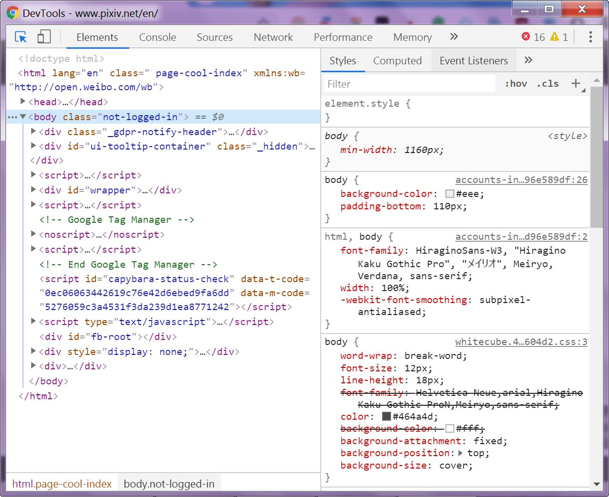 Firefox: 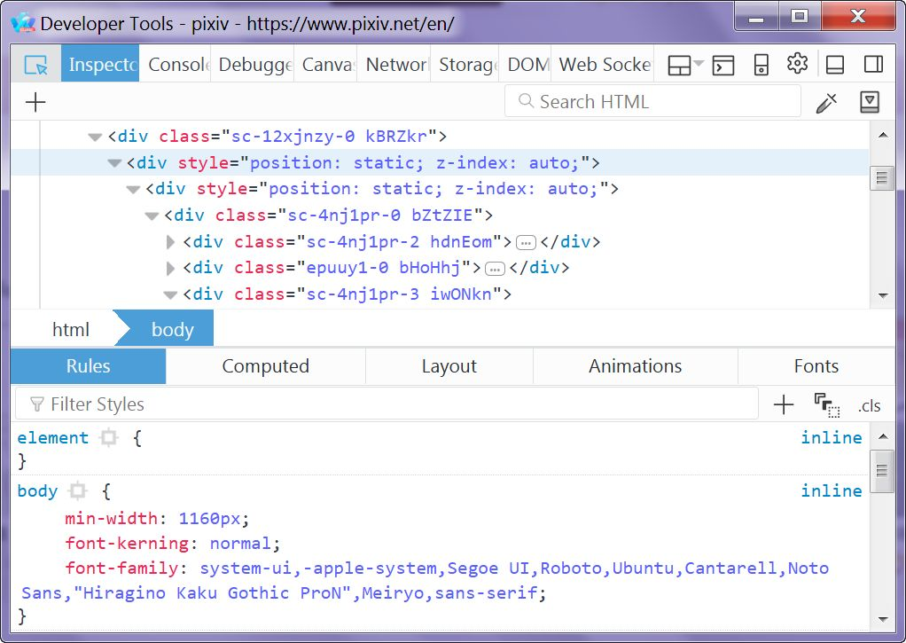Click [Network] tab inside Window:
Chrome: 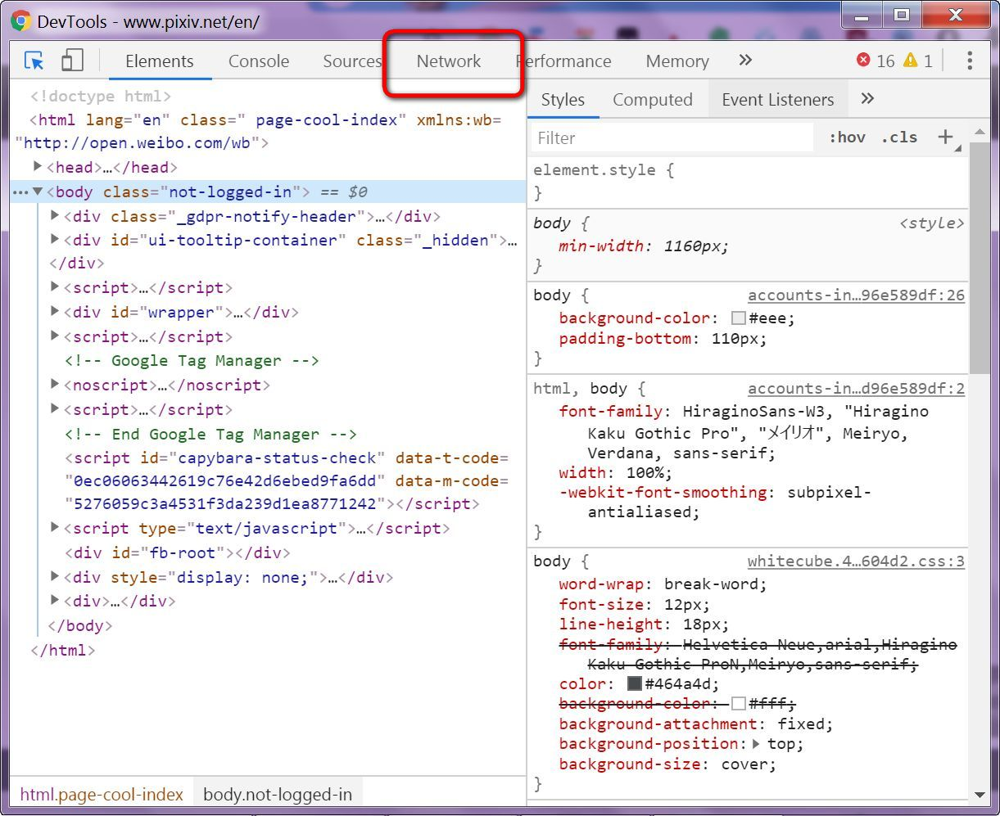 Firefox: 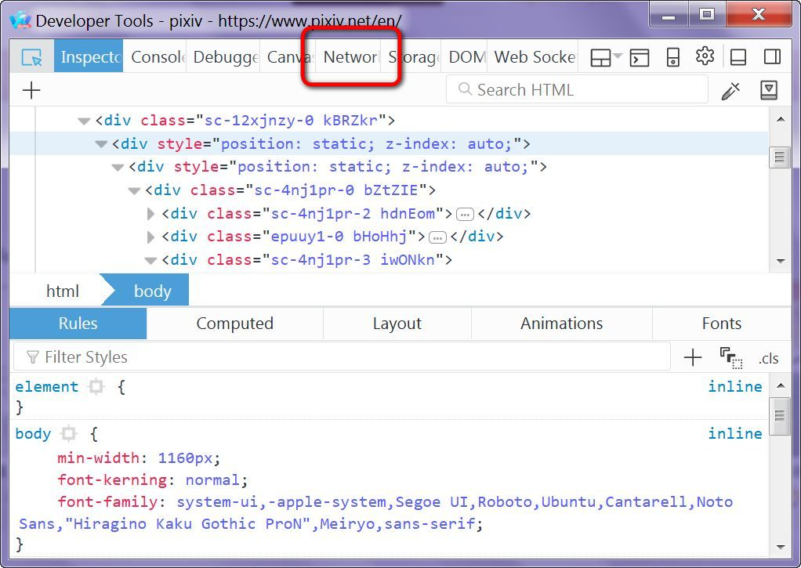Reload page:
Chrome: 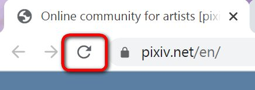 Firefox: 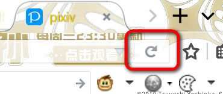Select [first line] inside Window, then click [Cookies] sub tab:
Chrome: 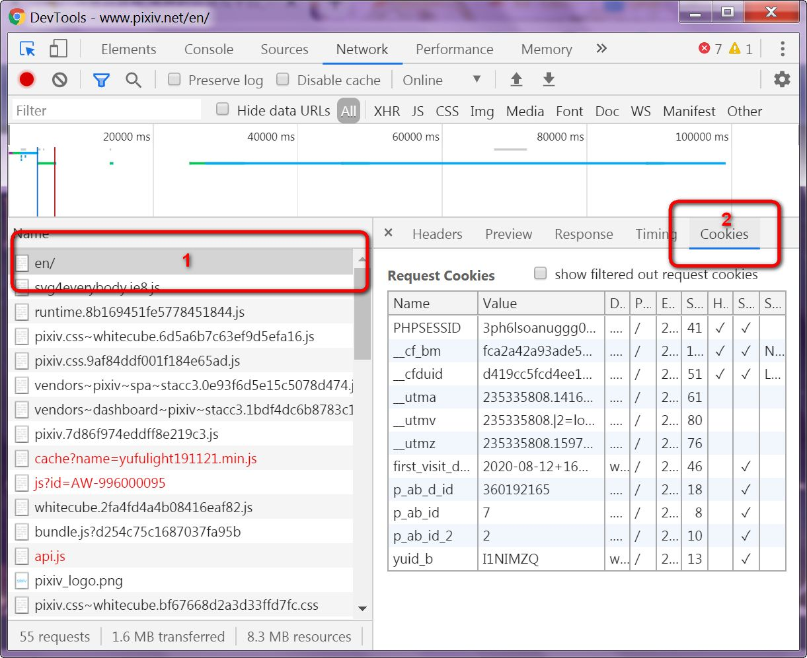 Firefox: 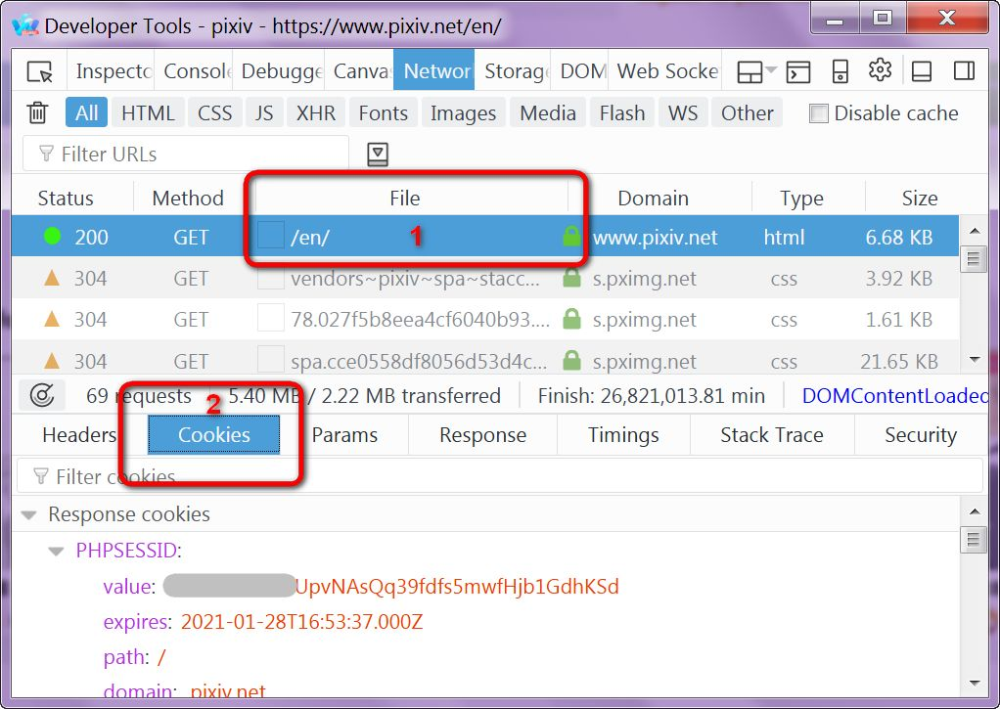Copy value of key [PHPSESSID]:
Chrome: 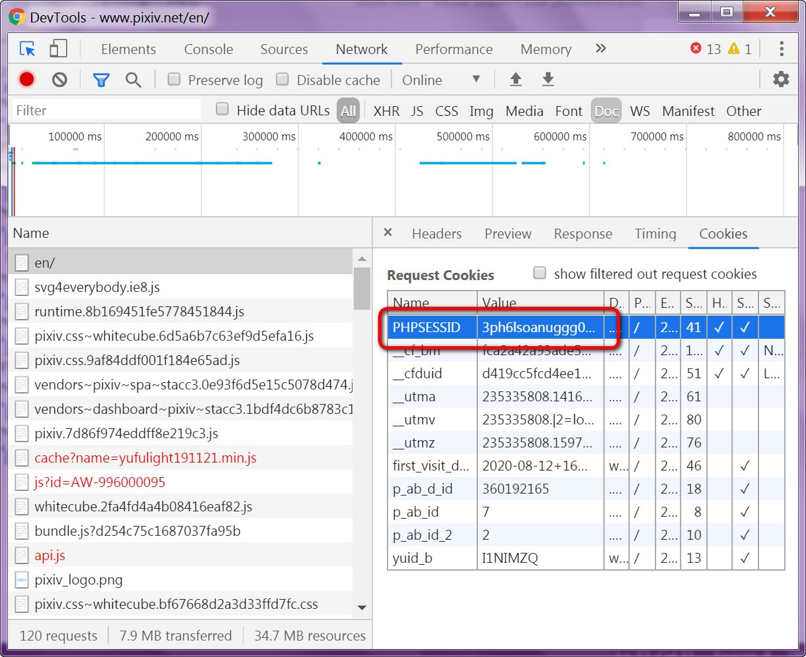 Firefox:
Paste value to [Prompt], by following format:
Chrome: Firefox:
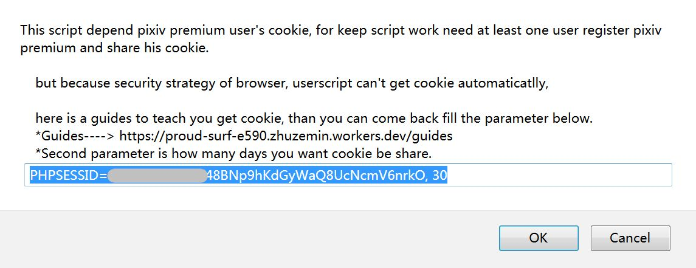
Firefox:
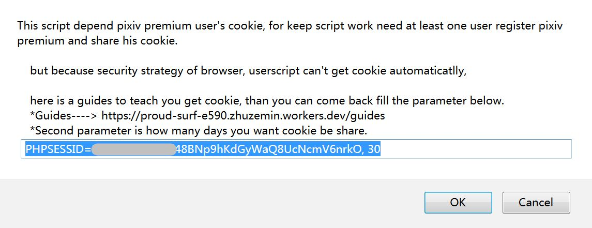